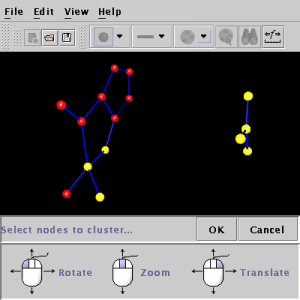
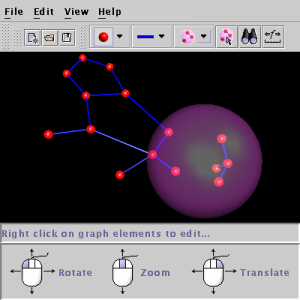
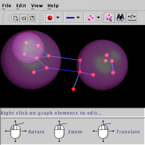
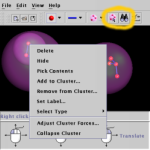
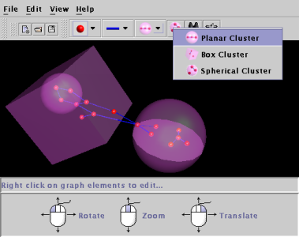

Back to contents page
Clusters
Sometimes when you have a large graph you will want to group some of the
nodes into related clusters. You may also have a graph that contain
"Sub-Graphs" or graphs nested within a larger graph.
In wilma you can chose to group nodes into clusters using the "Add Cluster"
button:

Click it now and then select some nodes to cluster:

Then hit the OK button and the cluster will appear...

The cluster is shown with a transparent pink bubble around the clustered
nodes.
Now create some more clusters. Note that you can add clusters to clusters
to any level of nesting:

When you right click on a cluster you're presented with the following menu:

The options are as follows:
- Delete: deletes the cluster and everything in it... don't do this unless
you're sure ;-).
- Hide: hides the cluster, use the binoculars button (second circled
button above) in the tool bar to make hidden clusters visible again.
- Pick Contents: allows you to pick the contents of the cluster with
the mouse. The cluster will appear grey to show that the contents are
pickable. Use the button left of the binoculars (first circled button
above) to make the cluster pickable again.
- Add to Cluster...: allows you to select more nodes to add to the cluster
- Remove from Cluster...: you will be able to pick nodes inside the cluster,
hitting the OK button will then take them out of the cluster (but they will
still be part of the graph)
- Set Label... give the cluster a label
- Select type... select from different types of cluster (clusters with
different shapes and properties)
- Adjust cluster forces: change the forces inside the cluster
- Collapse Cluster: elide the contents of the cluster. The collapsed
cluster will have a radius proportional to its mass (the number of nodes
it contains).
The last option is particularly powerful. When you have a very large
clustered graph it is often impossible to fit the entire graph on the screen,
or it may be too slow... By having collapsed clusters you can explore
parts of the graph in detail without having the entire graph visible. You
can expand the cluster again to reveal its contents by right clicking on
the collapsed cluster and selecting the "Expand Cluster" option.
Below is a collapsed cluster:

As with nodes and edges you can select different types of clusters:

- Spherical cluster is the normal type of cluster that you have already
scene
- Box cluster is a cuboid cluster. Shown on the left above.
- Planar cluster is a cluster with all of its nodes constrained to a
plane using the planar force. A planar cluster is shown on the right.
Back to contents
page